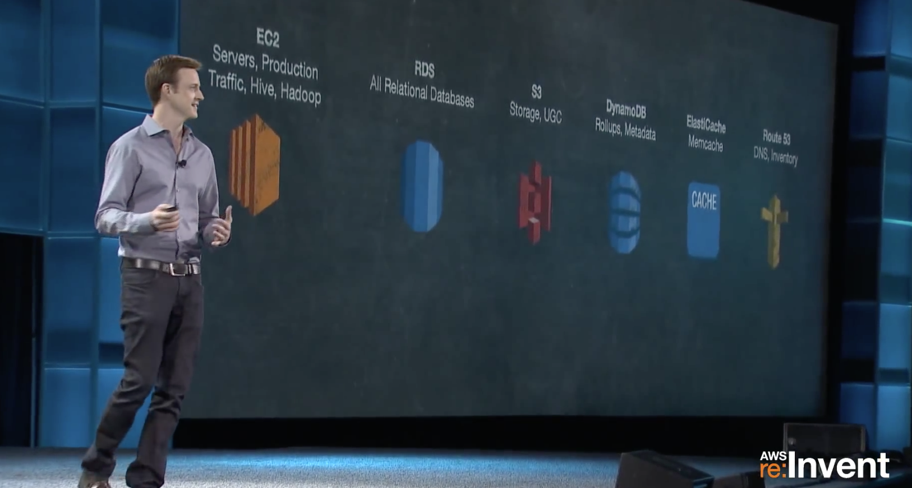
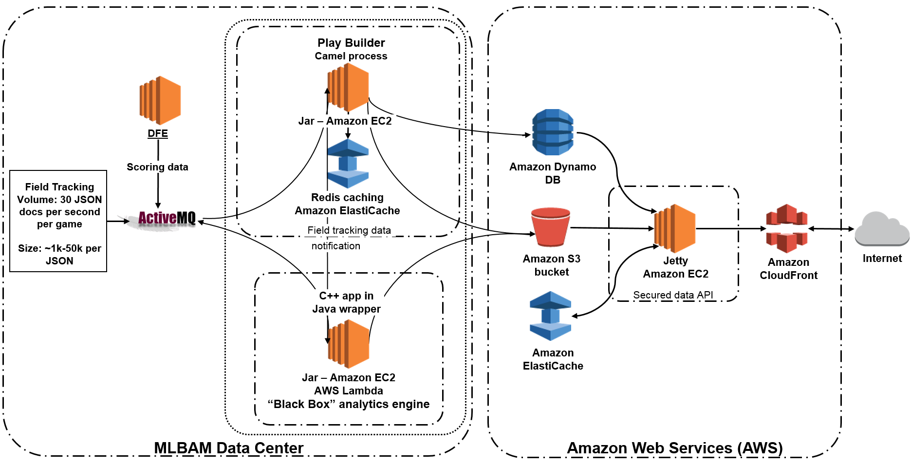
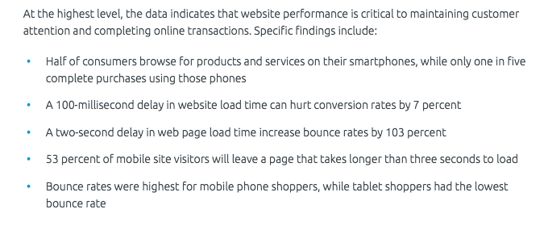

Making sense of big applications
with AppDynamics
Evan Fuller '16, Matt Cannizzaro '08
Suppose you were put in charge of operations at a major bank.
How would you manage it?
Well, a bank is not just one big program like your CS32 project.
If you manage it, you manage hundreds of different services,
running on thousands of separate machines, maybe running in another company's cloud.
How would you know if it was working or broken? Or just slow?
How would you know if your users were having a good experience?
I'm Matt Cannizzaro, this is Evan Fuller. We work at AppDynamics,
and we help people run really big and complicated applications.
We're going to spend most of this talk on technical stuff,
but I just want to give you a little more context about our company first.
AppDynamics
Started in 2008
Downtown SF
1400+ employees (300+ engineers)
Acquired by Cisco in March
Help wanted!
Let's build a web app
Say you're building a web app. It might start small, but
hopefully it will need to grow. You can get bigger and bigger
boxes, until you hit the limit of what a single machine can
handle. Then what? There's really only one choice: you
need to distribute your application across multiple nodes.
Easier said than done
(╯°□°）╯︵ ┻━┻
Writing a distributed application is not an easy task; there's
a completely new set of engineering problems that you'll
need to tackle. Soon, we'll talk about one of the most important
of these many problems: performance. But first, we'll examine a
few real-world examples of distributed applications.
Airbnb

(https://aws.amazon.com/solutions/case-studies/airbnb/)
From this screenshot from AWS Re-Invent 2013, you can see the myriad of services
that Airbnb deploys throughout their tech stack. They deploy EC2 instances for serving content,
multiple types of storage (SQL and NoSQL), and object storage. As of 2013, they deployed over 1,000
EC2 instances for serving web content, and 50 TB worth of photos in S3.
Nathan Blecharczyk:
"pretty much any time we can use an AWS instance to solve a problem, we will, so that we don't have to solve that problem ourselves"
It is clear that over the past several years, an increasing number of companies have shifted their
perspectives to rely on collections of external web services from AWS. The increasingly complicated
topology of an application is what necessitates AppDynamics.
MLB

Player Tracking System
(https://aws.amazon.com/solutions/case-studies/major-league-baseball-mlbam/)
As one last example of an application's topology, examine MLB's Player Tracking System. This system
collects data tracking the position of the ball and players every game of the season, which in
aggregate represents 7 TB per game, or 17 PB per season. The system is implemented across so many
components in order to handle many use cases: for example, ElastiCache is used for caching large
chunks of data in memory while performing compute-heavy analysis tasks.
Keep in mind, the screenshot on this slide only shows the topology for the set of use cases I've just
gone over here. Every other project managed by MLB Advanced Media likely has similarly complex systems.
Why performance matters

* courtesy of Akamai Online Retail Performance Report, 2017
There's a certain satisfaction in writing efficient, fast code.
But fundamentally, why do you need to care about performance?
Making good use of the infrastructure and resources that you
have is important, but it's not (usually) the most important thing.
Your app exists to solve your users' problems, but users are
impatient: if your app is slow, users will abandon it. This
problem is particularly bad if users have many alternatives
and the cost of switching is low. Think about booking a flight
on a travel site. If one site is slow, it's really easy to
try one of its competitors instead. If your app is a business,
bad performance costs money.
Highlights from the Akamai report included here indicate that
users expect the apps they are using to be responsive on the
resolution of a few seconds.
How you can measure performance?
Once you realize that you care about performance, you'll want
to understand how your app performs by measuring it. How
might you go about doing that? It would be reasonable to
start by collecting some data from each node your app is
running on, like CPU and memory utilization, how often
garbage collections are running, and things like that. This
is better than nothing, but not by much. Users don't care
about any of these things: they care about their experiences.
It's almost certainly bad if 5% of your users have a poor
experience with your app. Imagine if Google dropped one out of
every twenty searches that you ran! But could you detect
such a problem by looking at, say, CPU utilization? You'll
need a deeper understanding before you can find and fix many
types of problems.
Your app is not static
Traditionally, applications were deployed only a few times a
year, and each deployment was a major event. The rise of the
web and distributed applications has made it much easier to
deploy more often, so it's not uncommon for developers to
deploy new versions of their web apps multiple times in a
single week. This is great news for users, who benefit from
new features and bug fixes, but it introduces new problems
for performance monitoring. Since your app is constantly
changing, your performance monitor needs to be able to
quickly adapt to the new environment. A tool that requires
lengthy or complex configuration slows you down and is not
suitable for modern web application development.
Requirements
Distributed
Tells the story as your users experience it
Require minimal manual configuration
To recap, we need our performance monitor to be:
Telling the story of a request
We suspect that infrastructure monitoring is not enough, so
how will we measure performance? Your users interact with
your app over HTTP, so that's a logical place to start. If
we know when a request arrives at your server, and when your
server finishes sending the response, that's a decent
measure your app's performance from the user's perspective.
What we've got to work with
GET /dumprequest HTTP/1.1
Host: djce.org.uk
Connection: keep-alive
Accept: text/html,application/xhtml+xml,application/xml;q=0.9,*/*;q=0.8
User-Agent: Mozilla/5.0 (Macintosh; Intel Mac OS X 10_8_5) AppleWebKit/537.36 (KHTML, like Gecko) Chrome/29.0.1547.76 Safari/537.36
Referer: https://www.google.com/
Accept-Language: en-US,en;q=0.8
Here's an example of an HTTP request. It has these interesting
components:
Tag and follow
When a request from a user first arrives, start by generating
a unique ID for it. At some point, the routine that is
processing the user's request may make some requests to other
nodes in your application. When this happens, add the unique
ID as a header in the request. Using this method, we can
discover every HTTP request and response that's involved in
servicing a user's request, and if the user's request is
slow, or encounters an error, we can determine where the
problem lies.
Implementation
public void send(Request req)
{
if (Profiler.isInTransaction()) {
// We are a middle node in a distributed transaction.
requestID = Profiler.getCurrentTransactionID()
} else {
// We are the root node of a distributed transaction.
requestID = Profiler.createTransactionID()
}
long startT = System.nanoTime()
req.addHeader("REQUEST_ID", requestID)
...
long endT = System.nanoTime()
Profiler.reportRequest(req, endT - startT, requestID)
}
Let's take a quick look at the implementation of the
algorithm we just described. Here's the code we'd need to
add to the routine that sends requests to tag outgoing
requests.
Implementation
public void receive(Request req, Response res)
{
if (req.hasHeader("REQUEST_ID"))
Profiler.setCurrentTransaction(req.getHeader("REQUEST_ID"))
...
}
And here's the code we'd need to add to the routine that
handles incoming requests.
How your code runs
For argument's sake, let's assume that your app is written
in Java. It starts out as source code, which the Java compiler
transforms into Java byte code during compilation. When it's
time to run your program, you can't just run the byte code
as is; your CPU doesn't understand byte code. So the Java
Virtual Machine does another transformation, this time turning
the byte code into native machine code. You'll recall that this
step is called just-in-time compilation, or JITing.
Instrumenting an app
public void sendHttpRequest(Request request) {
...
}
Let's say that the method that implements HTTP requests in
your app looks something like this. Since few apps
re-implement this functionality from scratch, this method
is probably part of a library. In order to instrument it,
we need to transform the body of the method from this, into...
Instrumenting an app
public void sendHttpRequest(Request request) {
Profiler.beginHttpRequest(request);
...
Profiler.endHttpRequest(request);
}
... this. We can use a technique called byte code injection
to perform this transformation at runtime. Here's how it works:
when the JVM is running a program and it needs to find the
definition of a class, it uses a special sort of object
called a class loader. The JVM provides an API to hook into
the class loading process so that your code is called after
a class loader has found the definition of a class, but
before that class's definition is available to the rest of
the program. We use this opportunity to examine
the class being loaded, and if it happens to be a class that
we are interested in instrumenting, we write new byte code
into the bodies of its methods.
Making sense of the data
In a production environment, there are many agents reporting
quite a large amount of data. This means that we need to have
a scalable way of collecting and aggregating all this data,
and also need to have effective visualizations to help
our users make sense of it. Let me show you our product and
demo some of the basic features.
Demo should cover:
Unsolicited advice
Or, some things that you probably don't think matter,
Besides telling you about AppDynamics, Evan and I thought
it would be nice to give you something more generally useful.
We thought we could give you some unsolicited advice for your
first year after college.
You might be thinking "why the hell should I listen to this guy?
He's just some alum from years ago recruiting for some random company!"
Which is totally reasonable. I don't expect you to just take my word
on this stuff. Instead, listen to my arguments and see if you're convinced.
And I welcome discussion during this part, so please interrupt me
if you have questions.
1) Do code reviews
Getting your code reviewed makes you a better programmer, for the same reason that
getting your essays graded makes you a better writer. This one is pretty simple.
But there's also a huge benefit for the reviewer. Who here is or has been an
undergrad TA or head TA? Remember how much better you learned the material
when you TA'ed the class than whan you took it originally? Reviewing code is like that.
It makes you engage with the material on a deeper level. It expands your perspective
and forces you to re-examine your beliefs about what good code is.
2) Learn tech that transfers
Not proprietary stacks.
I used to work at Adobe, and one of the reasons I left is that I had become an expert on Flash, which is
a dead technology. When I applied to my next job, I basically had to apologize for that.
So one obvious tip is: don't waste time on dead technology.
3) Get real feedback
The first product I worked on at Adobe was really cool. We talked to potential customers and they
thought it was cool. We worked hard on it for 3 years and shipped it.
Then we found out there was no real market for it because it didn't really fit into
anyone's workflow.actually
started using it. They filed bugs! They made feature requests. And we added the things they wanted.
And we got more users. And it was glorious.
4) Stay close to the business
Sorry, this means money.
Full-stack visibility.
When I looked for my first job, I thought "I want to work on hard problems with smart people, and maybe
do something that improves the world". And most of my friends had the same criteria. It's very tempting
to not worry too much about the business. But there are some business considerations that can have a
material impact on your career.
5) Beware of tech debt
Your code lives longer than 3 months!
Throughout college and past tech internships you may have had, you likely have never worked in the
same body of code for longer than 3 months. In the process of writing said code, you likely cut a few
corners and used a few hacky workarounds to make something work for the sake of wrapping up a project.
Once you start working full-time, however, you're going to have to live with the consequences of these
kinds of shortcuts. When you take shortcuts to save yourself a few days of work, your best case scenario
is that you have to solve the problem later on. Your worst case scenario is you establish a pattern in
your codebase that other team members will then take to heart, and then a large section of logic may
become built on a flimsy foundation. It's almost always better to do it right the first time, rather
than punting responsibilities for later.
6) Coffee, lunch, beer
You will spend more time with your coworkers in an average week than most of your college friends. The
value you gain from getting to know them is immense not only on a personal level, but also on a career
level. These people can help mentor you about technical issues and design patterns, but also about the
mistakes they've made in their careers, and how to navigate your own career best.
Don't be afraid to extend these sorts of meet-ups outside of your team! I have met with the CEO and
an engineering VP multiple times just to catch up on each other's lives, give mutual feedback, and
discuss careers. Getting to know lots of different perspectives throughout the corporate ladder can
only help your understanding of your company and career.
Pro tips summary:
Go to lunch and happy hours with your coworkers
Beware of tech debt
Stay close to the business
Get real feedback
Learn tech that transfers
Do code reviews